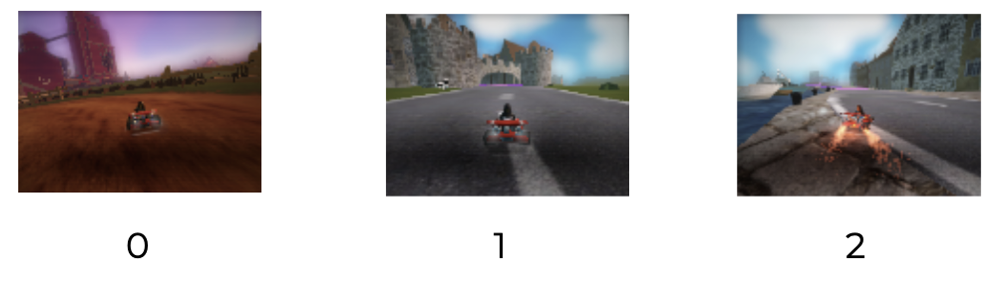
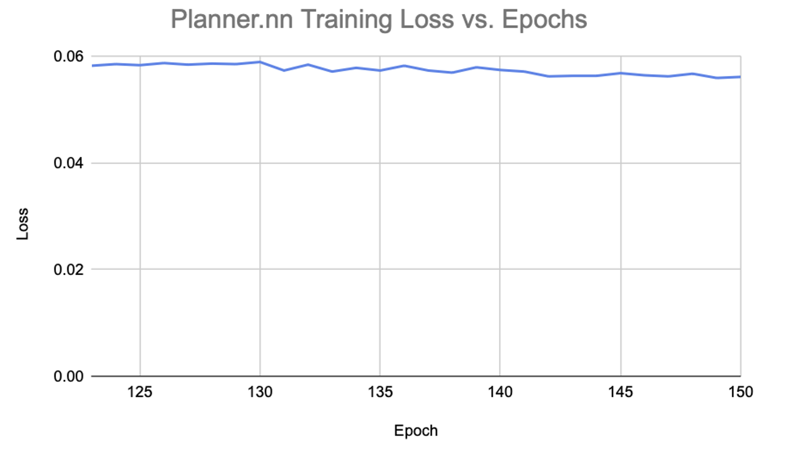
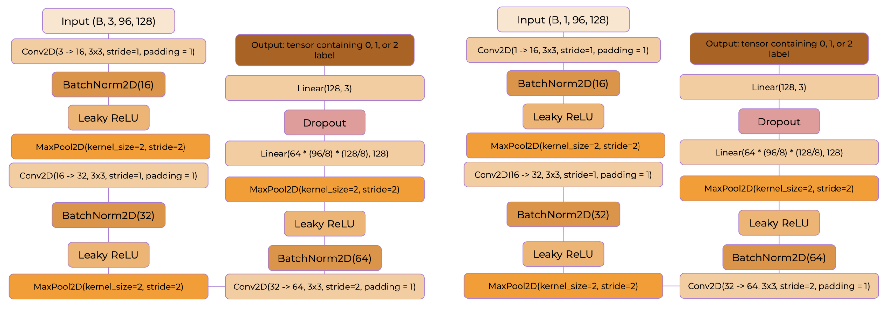
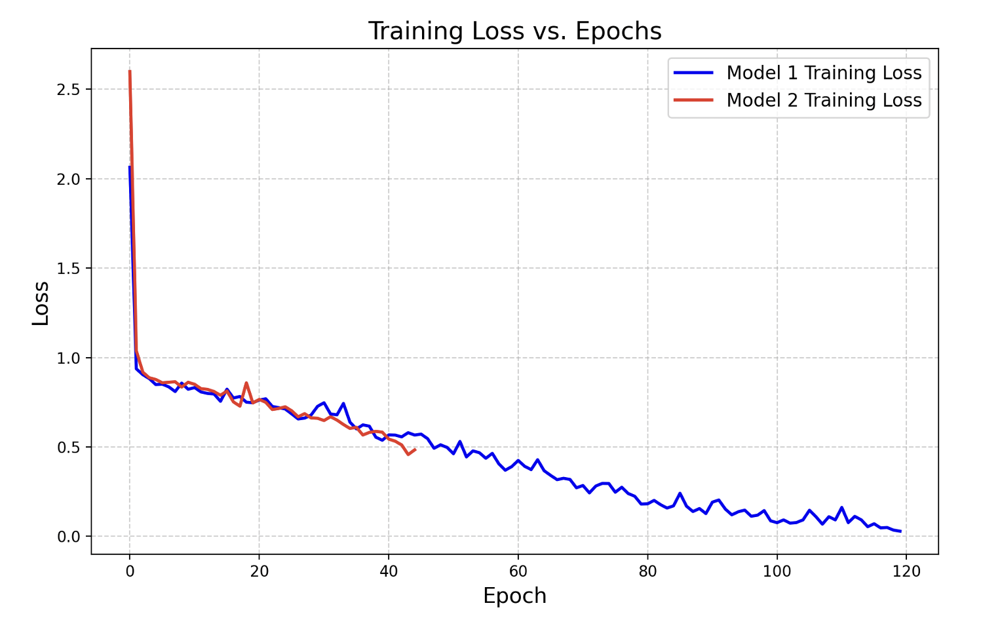

Hazard and Sharp Turn Detection in Mario Kart Using Deep Convolutional Neural Networks
23 Dec 2024 ·
10 min read
Hazard and Sharp Turn Detection in Mario Kart Using Deep Convolutional Neural Networks
1. Introduction
The aim of this project was to produce an agent capable of playing mario kart, on a locally run emulator, and then improve its completion times as much as possible.
2. Problem Definition
The task for this project entailed creating a neural network called Planner.nn which learned to predict the aimpoint for a given frame of the game based on ~10,000 training examples within a ‘drive_data’ folder. These examples consisted of frames captured from the game and their corresponding aim points (stored as 128x96 pixel PNGs and CSVs containing the aimpoint coordinate, respectively).
3. Experiental Evaluation
3.1 Methodology
In order to improve the agent’s performance as much as possible I did three things. Firstly I trained the experimented with different Planner architectures to see what model would produce the lowest loss. I then implemented a neural network to predict sharp turns in the game based on 800 hand labeled images (736 training examples, and 64 validation examples) Each image was labeled 0 (sharp left turn), 1 (relatively straight), 2 (sharp left). I built two versions of this classifier: RoadClassiffier.nn (a neural net that predicts sharp turns based on rgb frames), and GrayScaleRoadClassifier.nn (a neural net that predicts sharp turns based on gray scale frames). In this report I explain how models were trained, tested, evaluated, and reformed. Finally I implement PID control based on the recommendations of my group members.
Example Images from the Training Set
3.2 Modifications
Planner
The planner for my model was iteratively built by training different architectures and seeing which achieved the lowest loss value on the training data. The best ConvNet architecture consisted of 4 convolutional blocks with 4, batch normalization layers, 4 MaxPooling layers, ReLU activation functions, and a final Convolutional layer which outputs a single channel heatmap [1]. Running a spatial argmax on said heatmap returns a tensor containing the soft-argmax in normalized coordinates: the aimpoint. The model was trained using the After 120 epochs of training, the loss plateaued. The lowest loss value achieved by the planner during training was 0.0560.
Controller Modifications
A very simple controller was created for the initial planner to use. It used the difference between the agent’s current in game velocity. It accelerated and broke based on the difference between the target velocity and the current velocity [2]. The code was then modified to take in a parameter called concerning images which were output by the road_classifier and gray_scale_road_classifier networks within the utils.py folder [3]. PID was later implemented in the new controller.py file [4].
Figure 1. Planner Loss vs Epoch for epochs 123 through 150
Figure 2. Planner Arhitecture
Hazard Detection
The task of this section was to produce a neural network that has the ability to detect sharp turns within still frames from the Mario Kart emulator. In order to detect hazards, two neural networks were trained to predict whether a frame contained a sharp turn: RoadClassifier and GrayScaleRoadClassifier using 3 channel RGBs and their 1 Channel grayscale versions respectively. The networks are the same apart from the fact that the first takes in 3 channel RGB inputs and the second takes in 1 channel. The models consist of 3 convolutional blocks with batch normalization and max pooling layers as well as leaky ReLU (to improve model generalization).
Figure 3. (left, Right) RoadClassiffier and GrayScaleRoadClassifier Neural Network Arhitectures
Figure 4. RoadClassifier.nn training loss for best performing model
Figure 5. GrayScaleRoadClassifier.nn training loss for the two best models
| Model | Accuracy (%) | Accuracy when prediction of 2 is given for 0 or vice versa (%) |
|---|---|---|
| RoadClassifier.nn | 34.92 | 40.62 |
| GrayScaleRoadClassifier.nn | 82.54 | 82.53 |
Table 1. Testing accuracy of the best performing RoadClassifier.nn and GrayScaleRoadClassifier.nn models (64 images in test set)
4. Results and Challenges
4.1 Testing Results
When Testing the road classifier I realized that it was only predicting 1s. As such, I modified the relative numbers of 0s, 1s, and 2s in the training dataset until the model started to predict more than just one data type. The grayscale image classifier had a significantly better testing accuracy and predicted in-game turns more accurately.
4.2 Challenges
Initially the hazard models only predicted straight paths as mentioned. Once this was fixed, I had to modify the controller to deal with the grayscale classifier braking forever when it would come up to a sharp turn. I completely removed the break functionality. Also, figuring out how to adjust the model when a sharp turn was identified required some trial and error. The final problem was getting Pytux to work on my machine. My laptop restarted, the terminal closed and I needed to reinstall Pytux: it would not build. So, I could not run more versions of GrayScaleRoadClassifier.
4.3 Performance Results and Discussions
| Course | Base Controller | Planner without hazard detection | Planner with RoadClassifier | Planner with PID and RoadClassifier | Planner with PID and GrayScale RoadClassifier |
|---|---|---|---|---|---|
| Zengarden | 585 | 478 | 515 | 506 | 548 |
| Corfield Crossing | 704 | 785 | 708 | 691 | 705 |
| Lighthouse | 460 | 505 | 510 | 493 | 546 |
| Hacienda | 560 | 554 | 557 | 597 | 568 |
| Scotland | 777 | 820 | 758 | 751 | 792 |
| Snowtux Peak | 837 | 1000 | 942 | 827 | N/A |
| Average time (frames) | 654 | 690 | 665 | 644 | N/A |
Table 2. Table of completion times for each model on each track
5. Conclusion
The best performing model was the Planner with PID and RoadClassifier.nn hazard detection. The GrayScaleRoadClassifier.nn model predicted turns more consistently but in my opinion, the control loop for what to do when a turn was detected needed to be improved to actually utilize said information fully. Continuing, my next step would be to work on the control loop for what to do when sharp turns are registered and using more training data.
GitHub Link: https://github.com/angelo-soyannwo/EC_418_Mario_Kart_Final_Project/tree/main
References